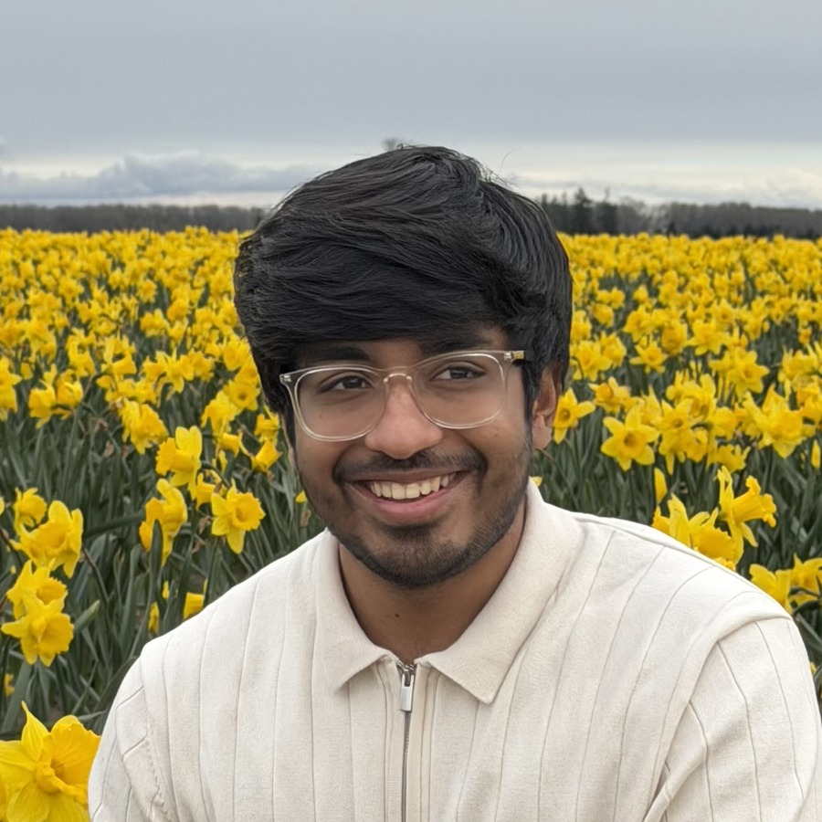

Aditya Kumar
I work on flow solvers: making them run faster on GPUs, and making sure the numbers they produce hold up.
Hi, I'm Aditya.

Skagit Valley, WashingtonI'm a mechanical and aerospace engineer working where computational fluid dynamics, high-performance computing, and physics-informed machine learning overlap. Most of what I do comes down to two questions: can this simulation run faster, and is the number it produces one I can defend?
Right now I'm an MS student in Aeronautics & Astronautics at the University of Washington and a research assistant in the Computational Fluid Mechanics Lab, where I work on the pressure-Poisson solver inside the lab's DNS code for droplet-laden turbulent flows: optimizing it on NVIDIA GPUs, then porting it to AMD hardware with HIP and hipFFT.
Before UW I led full-vehicle aerodynamics for Veloce Racing's Formula Student team, running 30+ scripted CFD configurations from SolidWorks geometry through wind-tunnel validation, and spent a research co-op at Kirloskar Pneumatic building thermodynamic models and surrogates for twin-screw compressors. Alongside that I build my own solvers, mostly to find out where they break.
The thread through all of it: don't trust a number until you've checked it against something you didn't write.
Besides work and research, I hike as much as the weather allows, mostly in the Cascades and Olympic National Park.
Applied CFD
Full-vehicle external aerodynamics in ANSYS Fluent and STAR-CCM+, wind-tunnel validated. Internal duct flow, free-surface marine hydrodynamics, and DOE-scripted run matrices across 30+ configurations.
HPC & solver verification
GPU kernel work on a production DNS solver in CUDA, HIP, and hipFFT, plus a from-scratch Navier-Stokes solver kept small enough to verify line by line: operator identities, manufactured solutions, published benchmark overlays.
Surrogate modelling
Gaussian Process and POD-reduced surrogates that stand in for expensive solves in thermal and compressor design spaces, always checked back against the solver they were trained on.
From solver internals to full-vehicle aero.

Solver_2D: a verified incompressible Navier-Stokes solver
Personal project · May 2026 – presentA 2D incompressible Navier-Stokes solver on a staggered MAC grid, written from scratch and kept small enough that reviewing every line was literally possible. Verified bottom-up: discrete operator identities, manufactured-solution convergence across four grids, then published benchmarks the solver could not influence.

Conjugate heat transfer study of a liquid-cooled cold plate
Personal project · Apr – Aug 2026A microchannel cold plate under a 700 W heat load, the order a modern accelerator dissipates. I swept 96 geometries through a templated SLURM array pipeline, then trained a Gaussian Process surrogate on the converged runs to search for a better channel design at matched pumping power.

Formula Student aerodynamics
Aerodynamics lead · Veloce Racing · 2021 – 2023Two seasons leading aero for the team's car, covering full-vehicle external aerodynamics and the internal sidepod cooling duct. The run matrix was scripted end to end through PyFluent, so a geometry change could be meshed, solved and post-processed overnight rather than over a week.
Porting a DNS pressure-Poisson solver to AMD GPUs
Research Assistant · Computational Fluid Mechanics Lab, UW · 2025 – presentThe lab's DNS solver for droplet-laden turbulent flows runs C/CUDA kernels behind Fortran host wrappers with MPI on the Hyak cluster. My work targets its pressure-Poisson solve, the most expensive step in the timeloop: first optimizing it on NVIDIA hardware, then porting the implementation to AMD GPUs using HIP and hipFFT. Every change is gated against Taylor-Green vortex regressions and the lab's operator test suite before it counts.
Open to Spring 2027 internships and full-time roles.
CFD, simulation software, HPC, and ML for simulation. Happy to talk about any of the work above.